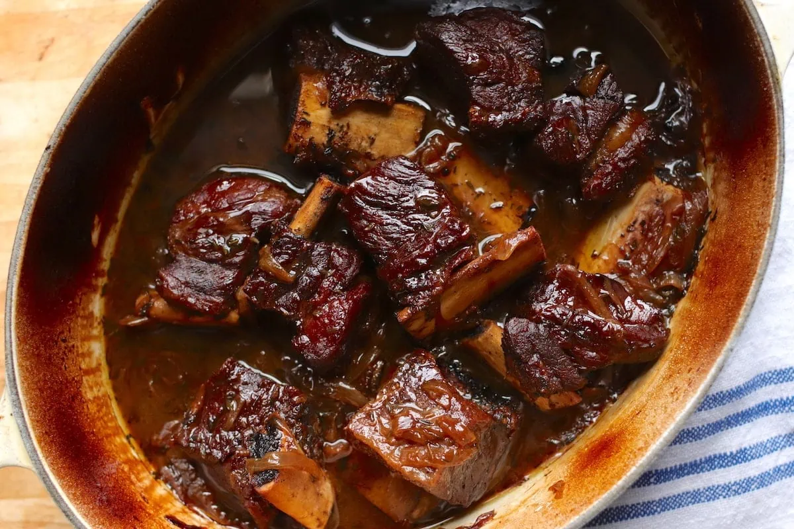

braised short ribs

description
Braised short ribs are a popular dish made by slow-cooking beef ribs in a flavorful liquid until they are tender and falling off the bone. The ribs are typically seared or browned in a pan before being added to a mixture of aromatics (such as onions, garlic, and carrots) and liquid (such as beef stock, red wine, or tomato sauce) in a covered pot or Dutch oven. The mixture is then simmered on the stove or in the oven for several hours until the meat is tender and the flavors have melded together. The resulting dish is often served with mashed potatoes, polenta, or a crusty bread to soak up the flavorful sauce. Braised short ribs are a hearty and satisfying comfort food that are perfect for cooler weather or special occasions.
ingredients
- 4 to 6 beef short ribs
- Salt and pepper
- 2 tablespoons of vegetable oil
- 1 large onion, chopped
- 3 cloves of garlic, minced
- 2 carrots, peeled and chopped
- 2 celery stalks, chopped
- 1 cup of red wine
- 2 cups of beef or chicken broth
- 2 bay leaves
- 3 sprigs of fresh thyme
- tomato paste
- 2 tablespoons of flour
- 2 tablespoons of unsalted butter (optional)
steps
- dredge ribs in flour, salt and pepper then brown in oil over medium heat
- once browned remove ribs and add vegetables cook until translucent
- add tomato paste and stir until combined
- deglaze with red wine and simmer until reduced by half
- add broth, bay leaves and thyme
- cover and bake in a 350 degree oven for three hours
- remove from oven and stir in butter